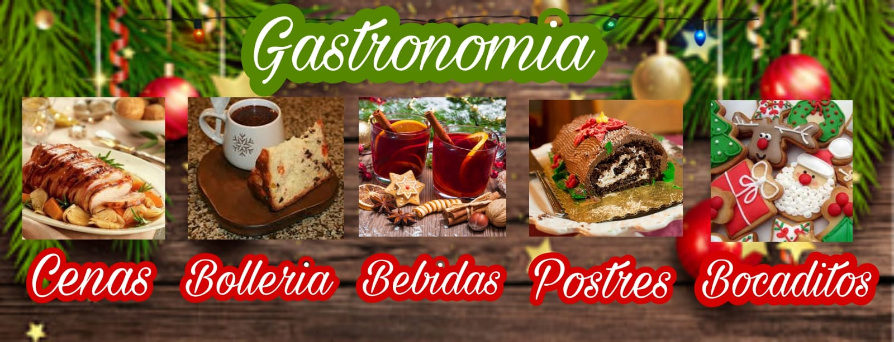

Se acerca navidad y tienes muchas ganas de prepara algo delizioso para estas fechas? pues no te preocupes en esta pagina puedes encontrar muchas recetas como pasteles,cenas,bocadillos,bebidas con y sin alcohol,postres y bolleria tipica de esta fecha tan especial.
a Navidad es una de las principales festividades que se celebran a nivel mundial, es de origen cristiano y conmemora el nacimiento de Jesús de Nazareth. Esta fecha fue elegida por los líderes de la iglesia cristiana inspirados en los evangelios de San Mateo y San Lucas. Los documentos históricos señalan que la navidad se celebró por primera vez en América Latina en 1492 en la Isla “La Hispaniola”, conocida actualmente como Haíti y República Dominicana. Durante esta festividad se han adoptado diversas prácticas que incluyen la decoración alusiva a la época, la preparación de platillos especiales y los encuentros familiares y con amigos. Sin embargo, cada país tiene sus propias tradiciones y costumbres para celebrar la navidad. En el caso del Estado Plurinacional de Bolivia, las tradiciones de los pueblos indígenas se han fusionado con las cristianas, y se han establecido prácticas como el canto de villancicos, conocidos como k’ajchito o Chuntunqui. La noche del 24 de diciembre suelen compartir en familia y comer pollo asado o una Picana, Los niños esperan que papá Noel les traiga regalos. Este día también se arma el pesebre y se intercambian regalos,Las familias se reúnen la noche del 24 de diciembre para disfrutar de platillos como pavo o lechón acompañado de puré de manzanas, arroz navideño, panetón y chocolate caliente

En la navidad paceña comunmente se suele comer el 24 por la noche una rica chocolatada con su respectivo paneton, aqui existen distintas marcas y distintos sabores para todos los gustos, tal cual asi es los hay con fruta abrillantada, chips de chocolate, masa de chocolate, solo pasas,etc. tambien se suele comer la riquisima Picana, la que tradicionalmete se come en noche buena, la cual consta de caldo con diferentes tipos de carnes como ser la de cordero, res, pollo y cerdo, cada quien lo prepara a gusto personal pero en estapagina veras las recetas mas tradicionales de la region. Como asi tambien encontraremos varias recetas no solo saladas tambien dulces y bebidas alucivas a ala fecha.